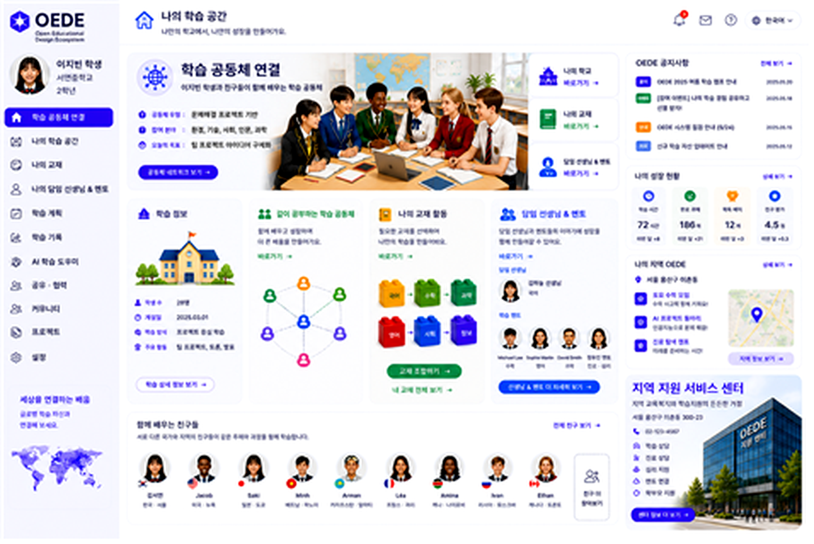

학습 공동체 연결
Learner Community Connection
OEDE connects learners, teachers, mentors, and learning resources into a shared learning space. This reflects the core idea that educational design experiences should not remain isolated but should become reusable and connected assets.